Tag i zink, kobber og aluminium: Fordele og begrænsninger
Hvad er forskellen mellem tagmaterialer ift. levetiden?
Metaltag såsom aluminium kan holde i 50 år og ofte længere, mens zinktag ofte kan holde godt over 70-100 år. Kobber har den længste levetid og kan holde flere århundreder.
Det betyder, at et typisk metaltag vil holde ca. 4-9 gange længere end et typisk tagpap tag, som normalt skal udskiftes hvert 12-17 år. Levetiden på tagmaterialer afhænger selvfølgelig også af miljømæssige faktorer, og forskellige materialer anbefales at anvende i forskellige miljøer (mere om det i de følgende afsnit).
Hvad er garantien for det?
Forskellige producenter giver forskellige garantier på deres produkter. Nogle producenter af zink- og kobbertag vil kun give 10 års garanti, mens andre giver 25-30 års garanti. Det er imidlertid installatøren, som skal tilbyde sin egen installationsgaranti. Garanti for aluminiumtag er typisk lavere. Mange producenter af aluminiummaterialer giver slet ikke nogen garanti på blank og prælakeret aluminium. Imidlertid er der producenter af aluminiummaterialer, der giver 40 års garanti på både farve (aldring) og materiale (korrosion). Disse aluminiummaterialer er typisk en ny generation af aluminiumprodukter i en hel ny kvalitet, og derfor følger så attraktive garantier.
Sammenlignet med andre tagløsninger har både aluminium-, zink- og kobbertag stadig den bedste garantioption. Mange andre tagløsninger såsom stål- og tagpap tage skal typisk udskiftes efter 15-20 år - og derfor følger ikke så attraktive garantimuligheder.
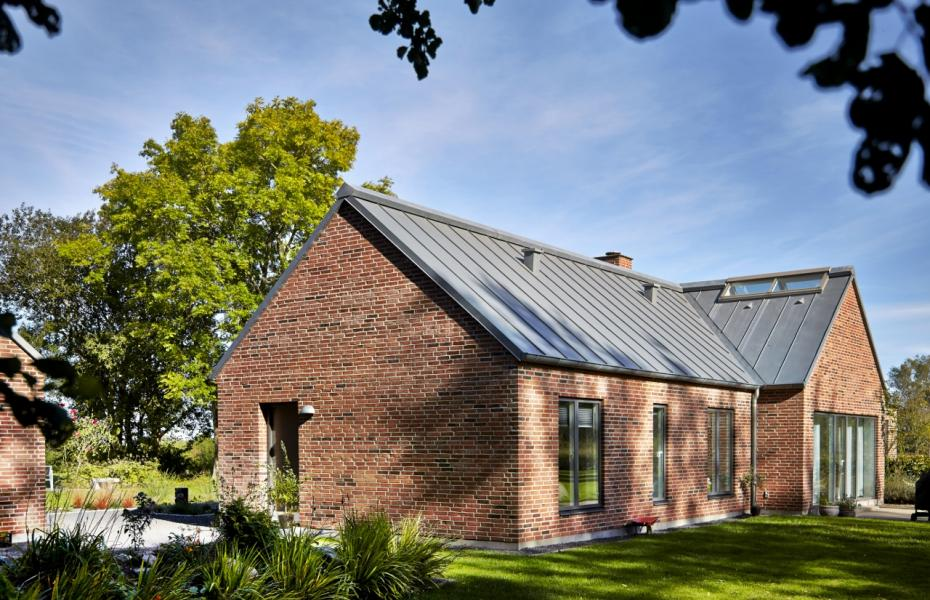
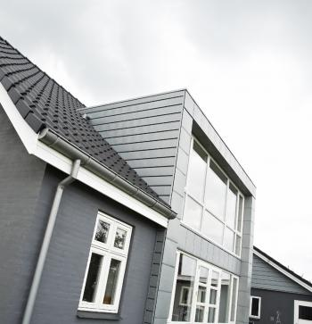
Tidens ændringer
Et hus gennemgår store ændringer gennem årtier. Aldring giver også et nyt udseende til alle tagmaterialer - men forskellige materialer ældes på en forskellige måde.
Aluminiums overlegne korrosionsbestandighed over for almindelige jernholdige tagoptioner (såsom stål) gør det til et hyppigt valg i kystnære anvendelser. Som et blankt og naturligt metal gennemgår aluminium næsten slet ingen patineringsproces, når det ældes, men beholder sin blanke overflade. Derfor kan det være en god ide at vælge et prælakeret aluminium til tagløsningen, hvis man ønsker sig en mat og mørkere farve (som ser meget pænere ud). De moderne aluminiummaterialer til tagløsninger fås i mange farver, og flere producenter leverer materialerne med beskyttende, anti-ridse-overflade, som gør dem til en fremragende tagoption. Aluminiummaterialets farve og overflade bliver ensartet i op til 40-90 år, afhængigt af miljømæssige faktorer.
Tidsforløbet har en meget positiv indflydelse på zinktagets udseende. Zink er et 100% naturligt og levende materiale, og det er fuldstændig korrosionsbestandigt. Inden for et år efter montagen bliver det blanke zinkmateriale gradvist mørkere, og det opnår sin velkendte matgrå optik. Det sker pga. materialets naturlige patineringsproces. Patina er et beskyttende og selvhelende lag, som dannes på zinkens overflade ved atmosfærisk eksponering, og udover beskyttelse giver materialet også et naturlig og eksklusivt udseende. Der kan imidlertid være farveforskelle på overfladen, og nogle zinkpladder på taget kan patinere langsommere end andre. Fx steder, som ikke er naturligt afvasket af regnvand, patinerer hurtigere - det kan resultere i pletter og en ikke ensartet kvalitet. Heldigvis fås hele tagoverfladen i et mere ensartet look med tiden - så man kan sige, at zink bliver mere og mere smuk med aldring. Ønsker man sig dog et 100% ensartet udseende fra den første dag, kan man vælge forpatineret eller sort zink.
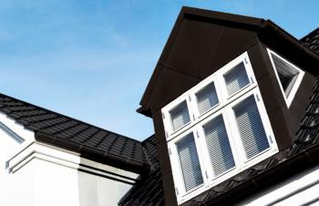
Kobber - forankret i århundreder af brug for tagløsninger - vil ikke ruste, har ingen "finish" i forhold til ridse eller skrælle, er blødt nok til nem bearbejdning, og det væder naturligt til en smuk irgrøn patina. Kobber i blank form har en lysbrun-rødlig farve og opnår et par uger eller måneder efter montagen en mørkebrun overflade, og bagefter bliver det som regel næsten sort. Det er en nuance, som mange arkitekter og husejere synes er den smukkeste overflade for materialet. Kobber opnår sin brunlige farve allerede et par måneder efter montagen, men patineringsprocessen slutter ikke her. Efter mange årtier får materialet en irgrøn nuance. Patineringstidsforløbet afhænger i høj grad af miljømæssige indflydelser, såsom regnvejr, niveauet af forurening og saltindholdet i luften, osv. Legering med andre metaller kan også føre til forskellige farvenuancer ved patinering (copperconcept.org giver en god indsigt ind i emnet). I bund og grund bliver kobbertaget også endnu smukkere med tiden. Det er også muligt at få materialet i patineret form, hvis man ønsker sig en mørk nuance fra starten.
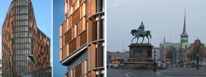
København: den nye Mærsk-bygning skinner i blank kobber, mens den historiske Børsen, som blev bygget i 1624, viser kobberets irgrønne nuancer.
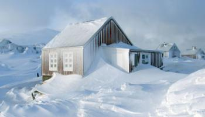
Miljø, vejrforhold og miljøets effekter på materialet
Undersøgelser og erfaringer viser, at metaltage tilbyder den bedste beskyttelse mod is, sne og isdæmninger. Taglækage sker aldrig, og man er også beskyttet mod ild, da et metaltag ikke brænder som cedertræ og nogle asfalttage.
Zinkens, aluminiums og kobberets fremragende stabilitet gør dem også til den bedste option på steder, som er udsat for støre regnmængder og kraftig vind. Efter et stort uvejr sker der ofte tagskader på mange huse, fx tagsten falder ned fra huse, og det kræver vedligeholdelse. Uvejr kan ikke skade taget, hvis det er lavet af en af disse premiummetaller.
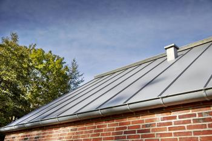
Vedligeholdelse
På grund af zinkens, aluminiums og kobberets lange levetid, ekstreme stabilitet, korrosionsbestandighed og gode tekniske egenskaber er vedligeholdelsen minimal eller i de fleste tilfælde slet ikke nødvendigt. Det eneste, man skal gøre, er at rense taget - i tilfælde af at der samler sig meget skidt og mange blade på overfladen. Ellers skal man bare nyde det flotte udseende og tidens og naturens ændringer på den smukke overflade.
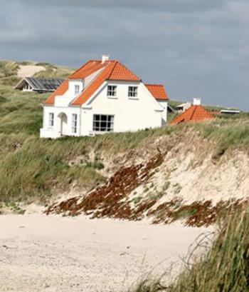
Anvendelse i forskellige miljøer og områder
Miljømæssige faktorer spiller ind, når man vælger byggematerialer. Mens alle tre metaller har en ekstrem lang levetid og holdbarhed, er det vigtigt at vælge et tagmateriale, som bliver smukt længst muligt i det givne miljø.
Zinkens levetid er for eksempel betydeligt påvirket af visse luftforurenende stoffer. Den mest aggressive af disse er svovldioxid (SO2), som hovedsageligt fremstilles af industrielle produktionsanlæg, termiske kraftværker og vejtrafik. Disse elementer fremskynder materialets korrosion, og zinkens beskyttende lag - patina - kan ikke fuldstændigt forhindre det. (Det forklarer, hvorfor korrosionshastigheden for rullet zink kan være 4 gange højere i et industriområde og dobbelt så meget i byområder end i landdistrikterne). Kystområder med et højt saltindhold i luften påvirker også negativt i forhold til zinkens holdbarhed og udseende.
Den fremragende marinekorrosionsbestandighed af kobber gør det til en af de bedste tagløsninger selv i kystområder og områder med et højt niveau af forurening.
Prælakeret aluminium kan også være et godt valg, da aluminium ikke patinerer, og overfladen bliver ensartet hele materialets liv.
Imidlertid er det vigtigt at bemærke, at marinemiljøer og forurenet luft påvirker negativt på alle metaller på en bestemt måde.
Hvad er værdien for husejeren?
Når man regner omkostninger for byggeprojektet, er det også nødvendigt at regne ROI ind (Return on Invenstment). Med andre ord: Hvad er husets værdi, hvis det skal sælges?
Et tag i zink, kobber eller aluminium kan være et bemærkelsesværdigt og betydeligt salgsargument i forhold til potentielle boligkøbere. Et metaltag behøver ikke at genopføres. Det kan være meget attraktivt for de fleste købere. Skønheden af et metaltag kan også være et stort aktiv, når det gælder tiltrækning af potentielle boligkøbere til en ejendom.
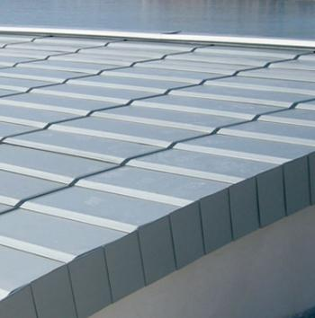
Metaltage og energieffektivitet
Når vi snakker om byggematerialer, er energieffektivitet et uundgåeligt emne. Det er en faktor, som altid spiller ind, og det skal betragtes, når man bygger. De fleste byggefirmaer bygger grønt, hvilket betyder, at huset/bygningen skal være energieffektivt.
Tag i prælakeret aluminium med lyse nuancer sammen med en lav termisk masse betyder, at det køler ned hurtigt efter en lang, varm sommerdag, hvilket giver et køligere interiør. Omvendt om vinteren reagerer et højisoleret tagsystem hurtigt for at holde varmen inde i strukturen og give øjeblikkelig komfort.
På grund af mørkere farver og tykkere plader absorberer og opbevarer zink og kobber mere varme om sommeren sammenlignet med aluminium. Men de er stadig meget "køligere" og grønnere end tagpap tage, og de blokerer for varmeoverførsel til loftet. På samme måde giver de også god isolation om vinteren.
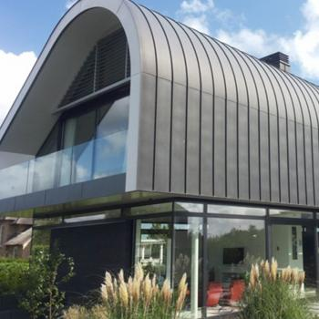
De grønneste materialer med hensyn til tagløsninger
Tagdækning i zink, kobber og aluminium er de eneste rigtig grønne materialer i tagindustrien, fordi det bruger den mindste mængde ressourcer under fremstillingsprocessen, indeholder ingen råolie, biprodukter og kan altid genbruges.
Disse 3 metaller er 100% genanvendelige i slutningen af deres levetid, dvs. gamle tage lavet af disse materialer vil aldrig ende på lossepladser ved afslutningen af deres levetid, hvilket sparer det værdifulde deponeringsrum og hjælper med at beskytte miljøet. Et metaltag (eller ethvert metal for den sags skyld) kan genbruges et ubegrænset antal gange uden at føre til materiel nedbrydning.
Aluminiums, zinkens og kobberets ekstremt lange holdbarhed gør dem til attraktive tagløsninger i 21. århundrede, hvor en af de afgørende formål i forhold til grøn byggeri er at udvikle byggeløsninger, som holder længst muligt.
Metaltage i Danmark - materialer, typer, design
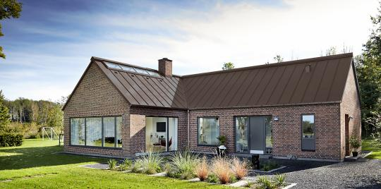
Kobbertag
Der findes ikke nogen statistik i Danmark, som viser procentdelen af huse med metaltage. Men ifølge eksperter i byggebranchen er kobbertage det mindst udbredt ift. private boliger. Mens mange historiske bygninger såsom kirker, slotte, gamle offentlige bygninger har anvendt kobber som tagløsning, er kobber en af de dyreste tagoptioner.
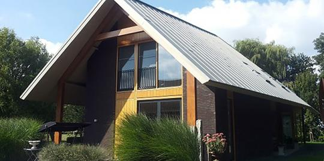
Zinktag
Zinktag er lidt mere udbredt blandt private boliger, og vi estimerer, at zinktage udgør ca. 5% af tage i Danmark lige nu. Da det bliver mere og mere tilgængeligt for private personer, som bygger nyt, kan man forvente, at endnu flere nye private boliger vil få et zinktag i fremtiden.
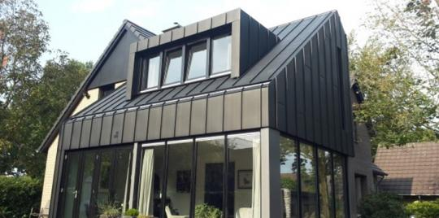
Aluminiumtag
Tag i aluminium bliver også mere og mere udbredt i landet, da aluminiumtagmaterialer fås, ikke længere kun i blank form, men i en bred palet af nuancer. Det giver mulighed for at lave kreative og unikke løsninger.
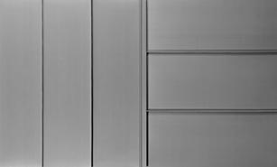
De mest udbredte design ift. zink-, aluminium- og kobbertag er den stående falsedesign. Stående false består af lange, vandrette linjer, som giver et rent look til husets tag:
Læs mere om stående false design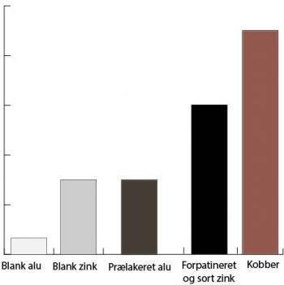
Metaltage og prisforhold
Den følgende grafik viser prisforholdet mellem de ovennævnte metaller. Blankt aluminium er væsentlig billigere end de andre premiummetaller - imidlertid anvendes det ikke så ofte til tagbeklædning, da den blanke/glatte overflade ikke giver det mest optimale udseende. Blankzinkens og den prælakerede aluminiumspris ligger ca. på det samme niveau, mens forpatineret zink og sort zink koster dobbelt så meget. Kobber er den dyreste tagbeklædning, og det koster ca. 50% mere end forpatineret og sort zink, og det er 150% dyre end blank zink eller prælakeret aluminium.
Kontakt vores Entreprise afdeling for flere oplysninger.
Prisforespørgsel
Vil du gerne lære mere om tagløsninger i zink, kobber og aluminium?
Så kontakt vores Support Team for flere oplysninger!